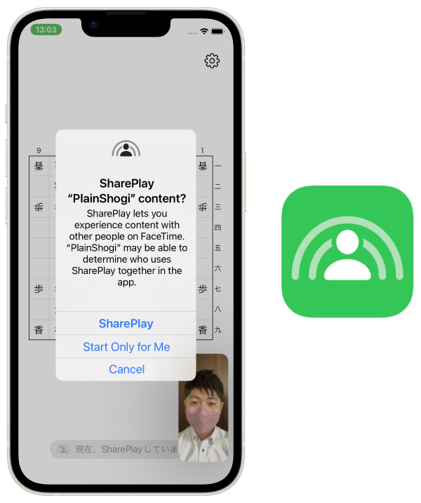

가장 평범한 바둑판 앱


iPhone, iPad, Mac, Apple Watch, Apple TV용 앱으로, 말들을 자유롭게 움직일 수 있는 단순한 바둑판입니다.
말은 자유롭게 움직입니다. 원하는 말을 지우거나 늘릴 수 있습니다.
말의 글꼴을 커스터마이징하거나 영어 표기로 바꾸어 자신에게 맞는 바둑판을 만들 수 있습니다.

여러 사람이 동시에 하나의 바둑판을 조작할 수 있습니다.
인터넷을 통해 'FaceTime' 앱이나 '메시지' 앱을 통해 친구와 함께 바둑판을 둘러앉을 수 있습니다.
SharePlay 기능은 '둘이서 간단하게 대국하는 것'뿐만 아니라 '여러 명이 모여서 바둑을 두는 것' 등 다양한 사용처를 상정하고 있다.
아이폰을 서로 가까이 두고 버튼을 한 번만 누르면 SharePlay를 시작할 수 있다. (iOS 17 이상 아이폰 한정)

iPhone, iPad, Apple Watch, Mac, Apple TV에 대응.
장면은 iCloud를 통해 기기 간에 동기화됩니다.
대국을 이미지로 내보낼 수 있습니다.
판면을 텍스트로 내보내거나 불러올 수 있습니다.
☗角͙
－－－－－－－－－
香͙桂͙銀͙金͙王͙金͙銀͙桂͙香͙
飛͙
歩͙歩͙歩͙歩͙歩͙歩͙ 歩͙歩͙
歩͙
歩
歩歩 歩歩歩歩歩歩
馬͙ 飛
香桂銀金王金銀桂香
－－－－－－－－－
☖
무료